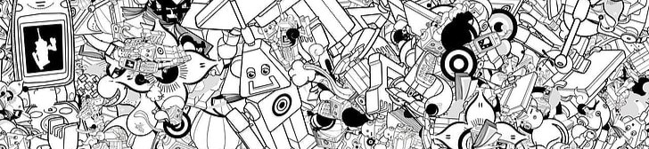
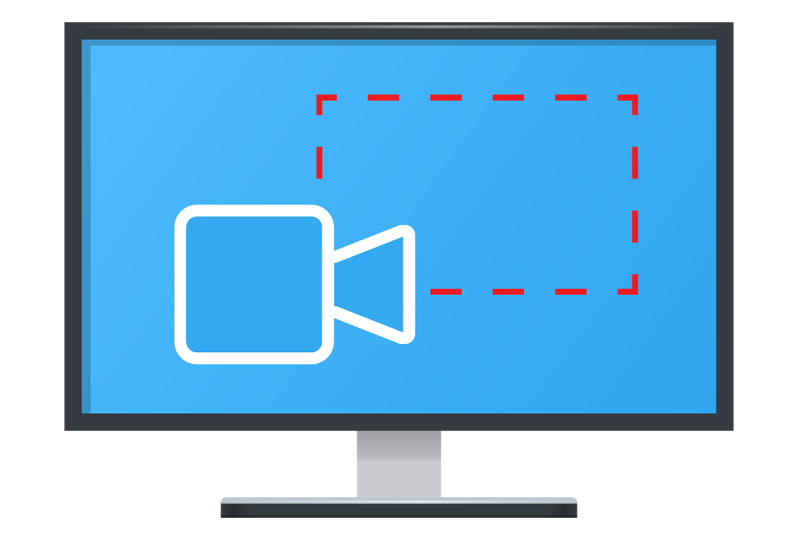

Início
Quem somos
Contatos

Nossos principais artigos
Como limpar os arquivos temporários do Windows
Atalhos essenciais do Windows
Como adicionar uma nova página no Word
Como hospedar um site no GitHub
Como inserir notas no rodapé no Word

Como gravar a tela do computador